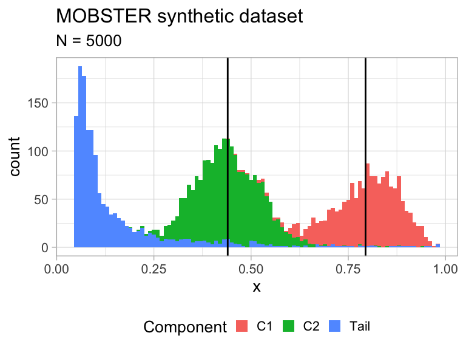

Vignette for mobster
Giulio Caravagna
September 2019
introduction.RmdTable of contents
- Generating a random MOBSTER dataset
- Fitting a dataset
- Selecting alternative best models
- Another paragraph
This vignette describes the basic usage of the MOBSTER R package for subclonal deconvolution in cancer.
The package is available at Github.
library(mobster)
#> [ MOBSTER - Model-based clustering in cancer ]
#> Author : Giulio Caravagna <gcaravagn@gmail.com>
#> GitHub : caravagn/mobster
#>
#> > [https://github.com/caravagn/mvMOBSTER] See package "mvmobster" for support with multi-region sequencing analyses.Generating a MOBSTER dataset
The input data must be formatted as an object of class data.frame (or, tibble) with at least one columun named VAF whose values are numerical, and no NA values are present. If a dataset has at least this column, then it can be processed with MOBSTER; the output object will contain a copy of the input data.
Example datasets and fits are released as
datainside the package, and are accessible as usual viadata("xxx", package = 'mobster')wherexxxis the name of the dataset to load. See the package manual for a list of available data.
In this vignette we sample a random dataset using the random_dataset function, which has different parameters to customize the data creation. Shortly, you can set
- the number of samples (mutations) and Beta components (subclones) to generate;
- constraint on the size of the components, the position and spread of the Beta means, and the variance of the Beta components.
- set the seed to fix the process.
In this example we fix the seed and the parameter Beta_variance_scaling, which affects the variance of the Beta(s). Because the variance is sampled as U[0,1] and scaled by this value, values on the order of 1000 give low variance, while 100 represents a dataset with quite some dispersion (compared to a putative Binomial generative model).
dataset = random_dataset(
seed = 123,
Beta_variance_scaling = 100 # variance ~ U[0, 1]/Beta_variance_scaling
)A list with 3 components is returned, which you can access to see the actual data, the sampled parameters of the generative model, and a plot of the data.
This function uses function
rdbpmm, a the sampler from the density function of the Dirchlet Beta Pareto Mixture Model (DBPMM) object that is implemented in MOBSTER – see?rdbpmmand?ddbpmm.
# Data, in the MOBSTER input format with a "VAF" column.
print(dataset$data)
#> # A tibble: 5,000 x 2
#> VAF cluster
#> <dbl> <chr>
#> 1 0.819 C1
#> 2 0.662 C1
#> 3 0.741 C1
#> 4 0.784 C1
#> 5 0.768 C1
#> 6 0.634 C1
#> 7 0.663 C1
#> 8 0.919 C1
#> 9 0.657 C1
#> 10 0.639 C1
#> # … with 4,990 more rows
# The generated model contains the parameters of the Beta components (a and b),
# the shape and scale of the tail, and the mixing proportion.
print(dataset$model)
#> $a
#> C1 C2
#> 16.40514 16.78235
#>
#> $b
#> C1 C2
#> 4.247342 21.373956
#>
#> $shape
#> [1] 3.130547
#>
#> $scale
#> [1] 0.05
#>
#> $pi
#> Tail C1 C2
#> 0.2919682 0.3054546 0.4025772
# A plot object (ggplot) is available where each data-point is coloured by
# its generative mixture component. The vertical lines annontate the means of
# the sampled Beta distributions.
print(dataset$plot)
Fitting a dataset
Function mobster_fit is the main function to fit a MOBSTER model. This function implements a model selection routine that, by default, scores the models with the reduced Incomplete Classification Likelihood (reICL). reICL is a variant to the popular BIC score which uses the entropy of the latent variables of the model; the reICL formulation uses a particular version of this score, as discussed in the main MOBSTER paper.
The fits are computed computed exploiting the easypar package, which allows easy parallel run of R functions.
This function has several parameters that allow one customizing the type of fit, the optimization task etc. Here we sample 1 fit per configuration of parameters, and set the optimization to stop when the variation between the mixing proportions and the likelihood is below epsilon = 1e-4 (usually, one would use epsilon = 1e-10 but with this value the compilation of this vignette is faster).
# Fit by MOBSTER (default K = 1, ..., 3, and tail TRUE/ FALSE)
fit = mobster_fit(
dataset$data,
samples = 1, # Number of runs per parameters configuration
epsilon = 1e-4, # Optimisation (delta across rus to determine stop)
parallel = TRUE # Parallel (multi-core) run
)
#> [ MOBSTER fit ~ N = 5000 ]
#>
#> - Beta(s) K = 1,2,3 ~ Pareto tail : ON/OFF;
#> - Fit by Moments-matching (s = 2000, i = peaks, ε = 1e-04) scoring with reICL
#> - Runs 1 x 3 x 2 = 6 with parallel
#> - Clusters filter : π > 0.02 and N > 10
#>
#>
#>
#> MOBSTER fit completed in 0.25 mins
#>
#> BEST FIT: reICL
#>
#> [ MOBSTER ] N = 5000 points with K = 2 Beta clusters, fit by MM in 41 steps [CONVERGED]
#>
#> Components (fit)
#> Tail n = 1442 (0.29) Shape = 3.2
#> Beta C1 n = 1524 (0.31) Mean = 0.79
#> Beta C2 n = 2034 (0.4) Mean = 0.44
#>
#> Scores (model selection)
#> NLL BIC AIC entropy ICL reduced.entropy
#> -2848.602 -5620.549 -5679.204 274.7051 -5345.844 214.1577
#> reICL size
#> -5406.391 9As a result, a call of mobster_fit will return a list with:
- the best fit, accessible as named object
fit$best; - a
fit$runslist that contains the top fits (ranked by score), the object available asbestwill match the head of this list,fit$runs; - and a
fit$fits.tablethat summarises the scores for each one of the runs.
The fits.table reports also other scores for the model fits, which include AIC, BIC, ICL the entropy and the likelihood of the model. Each fit object (best or any object stored in runs) is from class dbpmm. This class provides S3 objects for print and plot of a MOBSTER model
# Print the best model, as well as the first 3 models in the runs list
print(fit$best)
#> [ MOBSTER ] N = 5000 points with K = 2 Beta clusters, fit by MM in 41 steps [CONVERGED]
#>
#> Components (fit)
#> Tail n = 1442 (0.29) Shape = 3.2
#> Beta C1 n = 1524 (0.31) Mean = 0.79
#> Beta C2 n = 2034 (0.4) Mean = 0.44
#>
#> Scores (model selection)
#> NLL BIC AIC entropy ICL reduced.entropy
#> -2848.602 -5620.549 -5679.204 274.7051 -5345.844 214.1577
#> reICL size
#> -5406.391 9
print(fit$runs[[1]]) # same as best
#> [ MOBSTER ] N = 5000 points with K = 2 Beta clusters, fit by MM in 41 steps [CONVERGED]
#>
#> Components (fit)
#> Tail n = 1442 (0.29) Shape = 3.2
#> Beta C1 n = 1524 (0.31) Mean = 0.79
#> Beta C2 n = 2034 (0.4) Mean = 0.44
#>
#> Scores (model selection)
#> NLL BIC AIC entropy ICL reduced.entropy
#> -2848.602 -5620.549 -5679.204 274.7051 -5345.844 214.1577
#> reICL size
#> -5406.391 9
print(fit$runs[[2]])
#> [ MOBSTER ] N = 5000 points with K = 2 Beta clusters, fit by MM in 357 steps [CONVERGED]
#>
#> Components (fit)
#> Tail n = 1442 (0.29) Shape = 3.2
#> Beta C1 n = 1550 (0.32) Mean = 0.79
#> Beta C2 n = 2008 (0.39) Mean = 0.43
#>
#> Scores (model selection)
#> NLL BIC AIC entropy ICL reduced.entropy reICL
#> -2843.261 -5609.868 -5668.523 287.7545 -5322.113 226.7083 -5383.16
#> size
#> 9
print(fit$runs[[3]])
#> [ MOBSTER ] N = 5000 points with K = 1 Beta clusters, fit by MM in 16 steps [CONVERGED]
#>
#> Components (fit)
#> Tail n = 1385 (0.27) Shape = 3.7
#> Beta C1 n = 3615 (0.73) Mean = 0.58
#>
#> Scores (model selection)
#> NLL BIC AIC entropy ICL reduced.entropy
#> -2200.404 -4349.705 -4388.808 189.1157 -4160.589 0
#> reICL size
#> -4349.705 6The simplest visualization for MOBSTER’s fits is a coloured histogram, where colours represent clustering assignments, overlaid to the model density. By default MOBSTER names Beta clusters according to the decreasing order of their mean; so C1 is always the label of the cluster with highest mean, etc. The basic plot shows, mirrored on the y-axis, the percentage of sum-of-squared-error (SSE) as a function of the input VAF (which is termed Observed Frequency in the x-axis). The plot caption annotates some information about the fitting.
A comparative plot between the fit and the simulated data can be assembled with ggpubr function, which can take two ggplot objects and assemble them (an alternative function is plot_grid from the cowplot package).
Hard clustering assignments are computed and can be accessed with function Clusters, the function also allows imposing a minimum cutoff to the reponsibilities of the mutations (if a mutation’s maximum responsibility is below the cutoff, its assignment will be NA). Note that the return tibble is a copy of the input, with the new cluster column, plus a set of columns for the latent variables in MOBSTER (the clustering reponsibilities).
# Assign mutations with at least 80% of probability mass to their maximum responsibility
clusters = Clusters(
fit$best,
cutoff_assignment = .8
)
print(clusters)
#> # A tibble: 5,000 x 5
#> VAF cluster Tail C1 C2
#> <dbl> <chr> <dbl> <dbl> <dbl>
#> 1 0.819 C1 0.000110 1.000 2.02e- 6
#> 2 0.662 C1 0.000858 0.912 8.76e- 2
#> 3 0.741 C1 0.000245 0.999 1.01e- 3
#> 4 0.784 C1 0.000146 1.000 4.45e- 5
#> 5 0.768 C1 0.000173 1.000 1.47e- 4
#> 6 0.634 <NA> 0.00124 0.721 2.78e- 1
#> 7 0.663 C1 0.000851 0.914 8.55e- 2
#> 8 0.919 C1 0.000161 1.000 2.06e-12
#> 9 0.657 C1 0.000924 0.890 1.09e- 1
#> 10 0.639 <NA> 0.00117 0.770 2.29e- 1
#> # … with 4,990 more rowsA set of plots is available to inspect further details of a fit. For example,
- the latent variables can also be visualized as heatmap;
- the mixing proportions as barplot;
- the trace of the negative log-likelihood (NLL) can be inspected;
- and the initial condition of the fit can be plot as density.
# Assign mutations with at least 80% of probability mass to their maximum responsibility
plot_latent_variables(fit$best, cutoff_assignment = .8)


Selecting alternative best models
Alternative models are returned function mobster_fit, and can be easly visualized.
require(ggpubr)
# Figure assembly
figure = ggarrange(
plot(fit$runs[[1]]),
plot(fit$runs[[2]]),
plot(fit$runs[[3]]),
ncol = 3, nrow = 1
)
print(figure) The table reportin the scores can be visualised, and everal plots are available to inspect model selection.
The table reportin the scores can be visualised, and everal plots are available to inspect model selection.
print(fit$fits.table)
#> NLL BIC AIC entropy ICL reduced.entropy
#> 5 -2848.6018 -5620.5488 -5679.2036 274.7051 -5345.8438 214.1577
#> 6 -2843.2613 -5609.8679 -5668.5227 287.7545 -5322.1134 226.7083
#> 4 -2200.4041 -4349.7050 -4388.8082 189.1157 -4160.5894 0.0000
#> 1 -124.2584 -222.9652 -242.5168 0.0000 -222.9652 0.0000
#> 2 -222.7543 -394.4055 -433.5087 1209.1006 814.6950 1209.1006
#> 3 -174.7716 -298.4400 -337.5431 1177.8863 879.4463 1177.8863
#> reICL size K tail
#> 5 -5406.3911 9 2 TRUE
#> 6 -5383.1596 9 2 TRUE
#> 4 -4349.7050 6 1 TRUE
#> 1 -222.9652 3 1 FALSE
#> 2 814.6950 6 2 FALSE
#> 3 879.4463 6 2 FALSEOne can plot of the sum of squared error (SSE) between the fit density and the data (binned with bins of size 0.01), for several solutions at once. This measure can represent a sort of goodness of fit statistics.

The scores can also be compared graphically. Running plot_fit_scores all the computed scoring functions (BIC, AIC, ICL and reICL) are shown, which helps understanding if the best model with the default score (reICL) is the best also according to the other scores. In this graphics the red dot represents the best model according to each score.

These functions can be all wrapped by a call to plot_model_selection which plots the above summary statistics and the fits for each one of a set of top models (change the parameter TOP to select how many plots should be computed).
Bootstrapping a model
There are two types of bootstrap functions available in MOBSTER: parametric and nonparametric. The former samples data from the model, and re-runs the fits; the latter re-samples the data (with repetitions), and re-runs the fits. In both cases a distribution of the parameter fits can be approximated, and in the case of nonparametric bootstrap also probability of clustering together two mutations can be computed.
To show this, we sample and fit a smaller dataset
# Small dataset
dataset = random_dataset(
N = 300,
seed = 1
)
# Fit model
fit = mobster_fit(dataset$data)
#> [ MOBSTER fit ~ N = 300 ]
#>
#> - Beta(s) K = 1,2,3 ~ Pareto tail : ON/OFF;
#> - Fit by Moments-matching (s = 2000, i = peaks, ε = 1e-10) scoring with reICL
#> - Runs 5 x 3 x 2 = 30 with parallel
#> - Clusters filter : π > 0.02 and N > 10
#>
#>
#>
#> MOBSTER fit completed in 0.26 mins
#>
#> BEST FIT: reICL
#>
#> [ MOBSTER ] N = 300 points with K = 2 Beta clusters, fit by MM in 17 steps [CONVERGED]
#>
#> Components (fit)
#> Tail n = 71 (0.24) Shape = 3.7
#> Beta C1 n = 113 (0.38) Mean = 0.39
#> Beta C2 n = 116 (0.39) Mean = 0.27
#>
#> Scores (model selection)
#> NLL BIC AIC entropy ICL reduced.entropy
#> -669.5825 -1287.831 -1321.165 0.7345932 -1287.096 8.029683e-06
#> reICL size
#> -1287.831 9
# Composition with cowplot
figure = cowplot::plot_grid(
dataset$plot,
plot(fit$best),
ncol = 2,
align = 'h')
print(figure)
# Run "n.resamples" nonparametric bootstraps, and compute the bootstrapped statistics.
# The returned object contains also the list of bootstrap resamples, and the fits.
bootstrap_results = mobster_bootstrap(
fit$best,
bootstrap = 'nonparametric',
n.resamples = 5,
epsilon = 1e-4, # forwarded to mobster_fit, optimization epsilon
K = c(1, 2), # forwarded to mobster_fit, test only models with 1 or 2 Betas
cache = NULL # forwarded to mobster_fit, no cache
)
#> [ MOBSTER bootstrap ~ 5 resamples from nonparametric bootstrap ]
#>
#> =-=-=-=-=-=-=-=-=-=-=-=-=-=-=-=-=-=-=-
#> Bootstrapping for this MOBSTER model
#> =-=-=-=-=-=-=-=-=-=-=-=-=-=-=-=-=-=-=-
#> [ MOBSTER ] N = 300 points with K = 2 Beta clusters, fit by MM in 17 steps [CONVERGED]
#>
#> Components (fit)
#> Tail n = 71 (0.24) Shape = 3.7
#> Beta C1 n = 113 (0.38) Mean = 0.39
#> Beta C2 n = 116 (0.39) Mean = 0.27
#>
#> Scores (model selection)
#> NLL BIC AIC entropy ICL reduced.entropy
#> -669.5825 -1287.831 -1321.165 0.7345932 -1287.096 8.029683e-06
#> reICL size
#> -1287.831 9
#>
#> =-=-=-=-=-=-=-=-=-=-=-=-=-=-=-=-=-=-=-=-=-=-
#> Creating nonparametric bootstrap resamples
#> =-=-=-=-=-=-=-=-=-=-=-=-=-=-=-=-=-=-=-=-=-=-
#>
#> =-=-=-=-=-=-=-=-=-=-=-=-=-=-=-=-=-=-=-
#> Running fits (might take some time)
#> =-=-=-=-=-=-=-=-=-=-=-=-=-=-=-=-=-=-=-
#> 1 tasks raised an error, filtering them out.
#> 4 bootstrap(s) available.
# Statistics can be computed with a MOBSTER function.
bootstrap_statistics = bootstrapped_statistics(
fit$best,
bootstrap_results = bootstrap_results
)
#>
#> =-=-=-=-=-=-=-=-=-=-=-=-=-=-=-
#> Bootstrap observations n = 4
#> =-=-=-=-=-=-=-=-=-=-=-=-=-=-=-
#>
#> =-=-=-=-=-=-=-=-=-=-=-=-=-=-=-
#> Bootstrapped model frequency
#> =-=-=-=-=-=-=-=-=-=-=-=-=-=-=-
#> # A tibble: 1 x 3
#> Model Frequency fit.model
#> <fct> <dbl> <lgl>
#> 1 K = 2 with tail 1 TRUE
#>
#> =-=-=-=-=-=-=-=-=-=-=-=-=-=-=-=-=-=-=-=-=-=-=-=-=-=-
#> CI (empirical quantiles from bootstrap replicates)
#> =-=-=-=-=-=-=-=-=-=-=-=-=-=-=-=-=-=-=-=-=-=-=-=-=-=-
#>
#> Mixing proportions
#> # A tibble: 3 x 8
#> cluster statistics min lower_quantile higher_quantile max fit.value
#> <chr> <chr> <dbl> <dbl> <dbl> <dbl> <dbl>
#> 1 C1 Mixing pr… 0.340 0.340 0.363 0.363 0.376
#> 2 C2 Mixing pr… 0.413 0.413 0.432 0.433 0.387
#> 3 Tail Mixing pr… 0.204 0.205 0.246 0.247 0.237
#> # … with 1 more variable: init.value <dbl>
#>
#> Tail shape/ scale
#> # A tibble: 2 x 8
#> cluster statistics min lower_quantile higher_quantile max fit.value
#> <chr> <chr> <dbl> <dbl> <dbl> <dbl> <dbl>
#> 1 Tail Scale 0.0509 0.0509 0.0516 0.0516 0.0509
#> 2 Tail Shape 3.36 3.38 4.89 4.98 3.74
#> # … with 1 more variable: init.value <dbl>
#>
#> Beta peaks
#> # A tibble: 4 x 8
#> cluster statistics min lower_quantile higher_quantile max
#> <chr> <chr> <dbl> <dbl> <dbl> <dbl>
#> 1 C1 Mean 3.86e-1 0.386 0.389 3.89e-1
#> 2 C1 Variance 3.47e-4 0.000350 0.000504 5.04e-4
#> 3 C2 Mean 2.67e-1 0.267 0.268 2.68e-1
#> 4 C2 Variance 1.03e-5 0.0000105 0.0000132 1.32e-5
#> # … with 2 more variables: fit.value <dbl>, init.value <dbl>
#>
#> =-=-=-=-=-=-=-=-=-=-=-=-=-=-=-=-=-=-=-=-=-=-=-=-=-=-=-=-=-=-=-=-=-=-=-
#> Bootstrapped co-clustering probability from nonparametric bootstrap
#> =-=-=-=-=-=-=-=-=-=-=-=-=-=-=-=-=-=-=-=-=-=-=-=-=-=-=-=-=-=-=-=-=-=-=-
#>
|
| | 0%
|
|================ | 25%
|
|================================ | 50%
|
|================================================= | 75%
|
|=================================================================| 100%Bootstrapping, one can compute the model probability across re-samples
# Show the table and plot it at barplot
print(bootstrap_statistics$bootstrap_model)
#> # A tibble: 1 x 3
#> Model Frequency fit.model
#> <fct> <dbl> <lgl>
#> 1 K = 2 with tail 1 TRUE
# ... and plot it at barplot
plot_bootstrap_model_frequency(
bootstrap_results,
bootstrap_statistics
)
Similarly, one can compute the parameter probabilitiesacross re-samples
# Show the table
print(bootstrap_statistics$bootstrap_statistics)
#> # A tibble: 15 x 8
#> cluster statistics min lower_quantile higher_quantile max
#> <chr> <chr> <dbl> <dbl> <dbl> <dbl>
#> 1 C1 a 1.82e+2 183. 262. 2.63e+2
#> 2 C1 b 2.88e+2 288. 416. 4.18e+2
#> 3 C1 Mean 3.86e-1 0.386 0.389 3.89e-1
#> 4 C1 Mixing pr… 3.40e-1 0.340 0.363 3.63e-1
#> 5 C1 Variance 3.47e-4 0.000350 0.000504 5.04e-4
#> 6 C2 a 3.95e+3 3969. 5030. 5.10e+3
#> 7 C2 b 1.08e+4 10884. 13739. 1.39e+4
#> 8 C2 Mean 2.67e-1 0.267 0.268 2.68e-1
#> 9 C2 Mixing pr… 4.13e-1 0.413 0.432 4.33e-1
#> 10 C2 Variance 1.03e-5 0.0000105 0.0000132 1.32e-5
#> 11 Tail Mean 6.46e-2 0.0650 0.0724 7.25e-2
#> 12 Tail Mixing pr… 2.04e-1 0.205 0.246 2.47e-1
#> 13 Tail Scale 5.09e-2 0.0509 0.0516 5.16e-2
#> 14 Tail Shape 3.36e+0 3.38 4.89 4.98e+0
#> 15 Tail Variance 2.81e-4 0.000319 0.00113 1.15e-3
#> # … with 2 more variables: fit.value <dbl>, init.value <dbl>
# Plot the mixing proportions
mplot = plot_bootstrap_mixing_proportions(
fit$best,
bootstrap_results = bootstrap_results,
bootstrap_statistics = bootstrap_statistics
)
# Plot the tail parameters
tplot = plot_bootstrap_tail(
fit$best,
bootstrap_results = bootstrap_results,
bootstrap_statistics = bootstrap_statistics
)
# Plot the Beta parameters
bplot = plot_bootstrap_Beta(
fit$best,
bootstrap_results = bootstrap_results,
bootstrap_statistics = bootstrap_statistics
)
#> Warning: Removed 4 rows containing missing values (geom_bar).
#> Warning: Removed 4 rows containing missing values (geom_bar).
# Figure
figure = ggarrange(
mplot,
tplot,
bplot,
ncol = 3, nrow = 1,
widths = c(.7, 1, 1)
)
print(figure)
In the end, because this is a nonparametric bootstrap run, the co-clustering probability can be plot as well
plot_bootstrap_coclustering(
fit$best,
bootstrap_results = bootstrap_results,
bootstrap_statistics = bootstrap_statistics
)